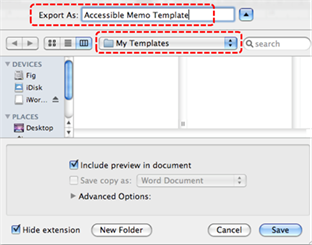
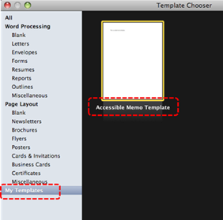
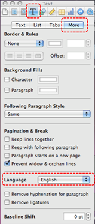
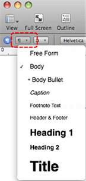
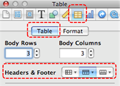
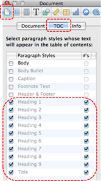
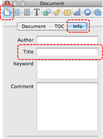
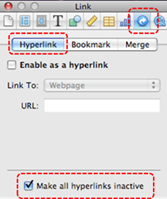

Authoring Techniques for Accessible Office Documents: iWork Pages '09
Date of Current Version: 04 Feb 2011
Latest Version (HTML): http://inclusivedesign.ca/accessible-office-documents/pages
Quick Reference
- Usage Notes
- Technique 1. Use Accessible Templates
- Technique 2. Specify Document Language
- Technique 3. Provide Text Alternatives for Images and Graphical Objects
- Technique 4. Avoid “Floating” Elements
- Technique 5. Use Headings
- Technique 6. Use Named Styles
- Technique 7. Use Built-In Document Structuring Features
- Technique 8. Create Accessible Charts
- Technique 9. Make Content Easier to See
- Technique 10. Make Content Easier to Understand
- Technique 11. Check Accessibility
- Technique 12. Use Accessibility Features when Saving/Exporting to Other Formats
- Technique 13. Consider Using Accessibility Support Applications/Plugins
- Accessibility Help
- References and Resources
- Acknowledgements
Usage Notes
At the time of testing (September 30, 2010), Pages ‘09 lacks several features that enable accessible office document authoring, most notably: the ability to add alternative text to image and objects. As a result, some of the other features that might otherwise support accessibility, such as its extensive templates are not as effective. In addition, Pages ‘09 does not include an accessibility checking feature.
What’s an “Office Document”?
You should use these techniques when you are using Pages ‘09 to create documents that are:
- Intended to be used by people (i.e., not computer code),
- Text-based (i.e., not simply images, although they may contain images),
- Fully printable (i.e., where dynamic features are limited to automatic page numbering, table of contents, etc. and do not include audio, video, or embedded interactivity),
- Self-contained (i.e., without hyperlinks to other documents, unlike web content), and
- Typical of office-style workflows (Reports, letters, memos, budgets, presentations, etc.).
If you are creating forms, web pages, applications, or other dynamic and/or interactive content, these techniques will still be useful to you, but you should also consult the W3C-WAI Web Content Accessibility Guidelines (WCAG 2.0) because these are specifically designed to provide guidance for highly dynamic and/or interactive content.
File Formats
The default file format for Pages ‘09 is the native iWork format.
In addition, Pages ‘09 offers many other word processor and web format saving options. Most of these have not been checked for accessibility, but some information and/or instructions are available for the following formats in Technique 12:
- MS Word
- HTML
Document Conventions
We have tried to formulate these techniques so that they are useful to all authors, regardless of whether they use a mouse. However, for clarity there are several instances where mouse-only language is used. Below are the mouse-only terms and their keyboard alternatives:
- *Right-click: To right-click with the keyboard, select the object using the Shift+Arrow keys and then press either (1) the “Right-Click” key (some keyboard have this to the right of the spacebar) or Shift+F10.
Disclaimer and Testing Details:
Following these techniques will increase the accessibility of your documents, but it does not guarantee accessibility to any specific disability groups. In cases where more certainty is required, it is recommended that you test the office documents with end users with disabilities, including screen reader users.
The application-specific steps and screenshots in this document were created using iWork Pages ‘09 (ver.4.0.3 (766), Mac OS X, Sept. 2010) while producing a document in the native iWork file format. Files are also easily saved as other file formats (seeTechnique 12).
Technique 1. Use Accessible Templates
All office documents start with a template, which can be as simple as a blank standard-sized page or as complex as a nearly complete document with text, graphics and other content. For example, a “Meeting Minutes” template might include headings for information relevant to a business meeting, such as “Actions” above a table with rows to denote time and columns for actions of the meeting.
Because templates provide the starting-point for so many documents, accessibility is critical. If you are unsure whether a template is accessible, you should check a sample document produced when the template is used (see Technique 11).
The default template for new documents in Pages ‘09 is a blank page. The basic installation also includes blank letter templates and blank business reports. These are all accessible by virtue of being blank.
It is possible to create your own accessible templates from scratch in Pages ‘09. As well, you can edit and modify the existing prepackaged templates, ensuring their accessibility as you do so and saving them as a new template.
To create an accessible template
- Go to menu item: File > New or File > New from Template Chooser… (Shift+Apple+N)
- In the Template Chooser dialog, select the Blank template or select one of the other existing template designs
- A new document in your selected template style will open
- Ensure that you follow the techniques in this document
- When you are finished you should also check the accessibility of the document (See Accessibility Checking, below)
- Go to menu item: File > Save as Template…
- In the Export As box, type a name for the template. Using a descriptive template name (e.g. “Accessible Memo Template”) will increase the prominence of the accessibility status.
- Specify a folder in which to save your template. To save the template in a different location than the default, create a new folder in the Templates folder. The folder name is then used as a template category in the Template Chooser.
Note: By default, it will be saved in your home folder in Library/Application Support/iWork/Pages/Templates/My Templates pane of the Template Chooser.
- Click Save
To select an accessible template
Note: Only use these steps if you have an accessible template available (e.g. that you previously saved). Otherwise, simply open a new (blank) document.
- Go to menu item: File > New from Template Chooser… (Shift+Apple+N)
- In the Template Chooser dialog, select My Templates from the left pane

- Select your accessible template and click Choose
Technique 2. Specify Document Language
In order for assistive technologies (e.g., screen readers) to be able to present your document accurately, it is important to indicate the natural language of the document. If a different natural language is used for a paragraph or selected text, this also needs to be clearly indicated.
To apply a language directly to selected text
- Highlight the text
Note: To change the language of the entire document, do a select all to select all the text in the document. - Go to menu item: View > Show Inspector
- In the Inspector dialog, select the Text button
- In the Text section, click the More tab
- In the Language section, select the language from the drop-down list

Technique 3. Provide Text Alternatives for Images and Graphical Objects
At this time, Pages ’09 does not offer a mechanism which enables the user to add alternative text descriptions to images or objects. [Tested: September 28, 2010]
When using images or other graphical objects, such as charts and graphs, it is important to ensure that the information you intend to convey by the image is also conveyed to people who cannot see the image. This can be accomplished by adding concise alternative text to each image. If an image is too complicated to concisely describe in the alternative text alone (artwork, flowcharts, etc.), provide a short text alternative and a longer description as well.
Tips for writing alternative text
- Try to answer the question "what information is the image conveying?"
- If the image does not convey any useful information, leave the alternative text blank
- If the image contains meaningful text, ensure all of the text is replicated
- Alternative text should be fairly short, usually a sentence or less and rarely more than two sentences
- If more description is required (e.g., for a chart or graph), provide a short description in the alternative text (e.g., a summary of the trend) and more detail in the long description, see below
- Test by having others review the document with the images replaced by the alternative text
Tips for writing longer descriptions
- Long descriptions should be used when text alternatives (see above) are insufficient to answer the question "what information is the image conveying?"
- In some situations, the information being conveyed will be how an image looks (e.g., an artwork, architectural detail, etc.). In these cases, try to describe the image without making too many of your own assumptions.
- One approach is to imagine you are describing the image to a person over the phone
- Ensure that you still provide concise alternative text to help readers decide if they are interested in the longer description
Alternatively, you can include the same information conveyed by the image within the body of the document, providing the images as an alternate to the text. In that case, you do not have to provide alternate text within the image.
Technique 4. Avoid “Floating” Elements
Pages ’09 will default the position of an inserted image or object depending on the method that is used to insert it. If you use a method that requires you to simply drag-and-drop the image or object onto the document, it will automatically be positioned as “floating”.
A “floating” object keeps its position relative to the page, while text flows around it. As content moves up or down on the page, the object stays where it was placed. To ensure that images and objects remain with the text that references it, press the Command key and then drag the image onto the document or follow the steps below.
To import image as an inline object
- Place the insertion point wherever you want the image to appear
- Go to menu item: Insert > Choose
- Select the image file
- Click Insert
Note: You can always ensure your image or object is positioned with the text that references it. Select the image or object, then go to the Format bar and ensure that Inline button is selected.
Technique 5. Use Headings
Any documents that are longer than a few paragraphs require structuring to make them more straightforward for readers to understand. One of the easiest ways to do this is to use “true headings” to create logical divisions between paragraphs. True headings are more than just bolded, enlarged, or centered text; they are structural elements that order and levels provide a meaningful sequence to users of assistive technologies.
Tips for headings
- Use the default headings styles provided (“Heading “, “Heading 2”, etc.)
- Nest headings properly (e.g., the sub-headings of a “Heading 1” are “Heading 2”, etc.)
- Do not skip heading levels
To apply headings to selected text
- Highlight selected text
- Go to the Format Bar and select the Choose a paragraph style button
- Select the style you would like to apply from the drop-down menu

To create new heading styles
- Highlight text and format with the characteristics you would like to apply to a new heading
- Go to menu item: Format > Create New Paragraph Style from Selection…
- In the New paragraph style dialog, enter a heading style name in the Name text box
- Select OK
Technique 6. Use Named Styles
As with “True Headings” (see Technique 5), you should attempt to make use of the named styles that are included with the office application (e.g., “emphasis”, “caption”, etc.) before creating your own styles or using the character formatting tools directly. Named styles help your readers understand why something was formatted in a given way, which is especially helpful when there are multiple reasons for the same formatting (e.g., it is common to use italics for emphasis, Latin terms and species names).
For more information on formatting using named styles, see Technique 9.
Note: While office application suites support headings in much the same way, the named styles often differ.
To use default named styles
- Default named styles can be applied the same way as headings (see Technique 5).
Technique 7. Use Built-In Document Structuring Features
7.1 Tables
When using tables, it is important to ensure that they are clear and appropriately structured. This helps all users to better understand the information in the table and allows assistive technologies (e.g., screen readers) to provide context so that the information within the table can be conveyed in a meaningful way.
Tips for tables
- Only use tables for tabular information, not for formatting, such as to position columns.
- Use “real tables” rather than text formatted to look like tables using the TAB key or space bar. These will not be recognized by assistive technology.
- Keep tables simple by avoiding merged cells and dividing complex data sets into separate smaller tables, where possible.
- If tables split across pages, set the header to show at the top of each page. Also set the table to break between rows instead of in the middle of rows.
- Create a text summary of the essential table contents. Any abbreviations used should be explained in the summary.
- Table captions or descriptions should answer the question "what is the table's purpose and how is it organized?" (e.g., "A sample order form with separate columns for the item name, price and quantity").
- Table cells should be marked as table headers when they serve as labels to help interpret the other cells in the table.
- Table header cell labels should be concise and clear.
- Ensure the table is not “floating” on the page (see Technique 4)
To add a table with headings
- Position the cursor at the location in the document you would like to add the table
- Go to menu item: Insert > Table
- Go to menu item: View > Show Inspector
- In the Inspector dialog, select Table inspector
- Select the Table tab
- In the Headers & Footer section, click the Choose the number of header columns button or the Choose the number of header rows button
- Select the number of header rows or columns you would like your table to have

7.2. Lists
When you create lists, it is important to format them as “real lists”. Otherwise, assistive technologies will interpret your list as a series of short separate paragraphs instead of a coherent list of related items.
To create an ordered or unordered list
- Place the cursor where you would like to insert the list or highlight the text of a list you already entered into your document
- In the Toolbar, click the Inspector button to show the inspector window
- In the Inspector dialog, click the Text inspector button
- Select the List tab
- In the Bullets & Numbering section, format your list style using the drop-down menus
7.3 Columns
Use Columns feature for placing text in columns.
Note: Because columns can be a challenge for users of some assistive technologies, consider whether a column layout is really necessary.
7.4 Page Breaks
Start a new page by inserting a page break instead of repeated hard returns.
7.5 Use a Table of Contents
Creating an index or table of contents to outline office document content can provide a means of navigating the meaningful sequence of content.
The best way to generate a table of contents is after applying the predefined heading styles, such as "Heading 1" as described above, to the headings that you want to include in your table of contents. After you apply these styles, you can then create a table of contents.
To generate a Table of Contents
- In the Toolbar, click Inspector
- In the Inspector dialog, click the Document button
- Select the TOC tab
- Select the checkboxes next to the paragraph styles whose text you want to appear in the table of contents
- In the #’s column, select those paragraph styles for which you want page numbers to appear

- Place the insertion point at the beginning of the line where you want the table of contents to appear
Note: Table of contents created in Pages ’09 list only the content that follows it, up until the next table of contents. To create a master table of all the contents in your document, it must be the only table of contents and must be placed at the beginning of the document. - Go to menu item: Insert > Table of Contents
To update a Table of Contents
- In the Toolbar, click Inspector
- In the Inspector dialog, click the Document button
- Select the TOC tab
- Click Update Now at the bottom of the dialog
Note: You can also automatically update by clicking any entry in the table of contents.
7.6 Use Page Numbering
Numbering the pages of your document helps those reading and editing your document effectively navigate and reference its content.
To Insert Page Numbers
- Go to menu item: Insert > Auto Page Numbers…
- In the Insert Page Numbers dialog, format the page number using the available options
- Select Insert
7.7 Document Title
In case the document is ever converted into HTML, it should be given a descriptive and meaningful title.
To change the title of the current document
- In the Toolbar, select Inspector
- In the Inspector dialog, select the Document inspector button
- Click the Info tab
- In the Title box, type a descriptive name for the document
Note: The Title defined in the properties is different than the file name. It is also unrelated to the template name, discussed above.
Technique 8. Create Accessible Charts
Charts can be used to make data more understandable for some audiences. However, it is important to ensure that your chart is as accessible as possible to all members of your audience. All basic accessibility considerations that are applied to the rest of your document must also be applied to your charts and the elements within your charts. For example, use shape and color, rather than color alone, to convey information. As well, some further steps should be taken to ensure that the contents are your chart are appropriate labeled to give users reference points that will help them to correctly interpret the information.
To create a chart
- Go to menu item: Insert > Chart
- Select a chart type from the list
- Update the Chart Data Editor with the data you would like to display in the chart
- Close the Chart Data Editor
To add titles and labels
- Select the chart
- Go to menu item: View > Show Inspector
- In the Chart Inspector, select Chart
- Ensure the Show Title and Show Legend check boxes are selected
- Select Axis
- Under Value Axis (Y) and Category Axis (X), select Show Title and Show Value Labels from their respective drop-down menus
To change to a different predefined Chart Type
- Select the chart
- Go to menu item: View > Show Inspector
- Select a chart type from the Choose a chart type drop-down menu
Other Chart Considerations
- When creating line charts, use the formatting options to create different types of dotted lines to facilitate legibility for users who are color blind
- When creating bar charts, it is helpful to apply texture instead of color to differentiate the bars
- Change the default colors to a color safe or gray-scale palette
- Use the formatting options to change predefined colors, ensuring that they align with sufficient contrast requirements (see Technique 9.2)
Technique 9. Make Content Easier to See
9.1 Format of Text
When formatting text, especially when the text is likely to printed, try to:
- Use font sizes between 12 and 18 points for body text.
- Use fonts of normal weight, rather than bold or light weight fonts. If you do choose to use bold fonts for emphasis, use them sparingly.
- Use standard fonts with clear spacing and easily recognized upper and lower case characters. Sans serif fonts (e.g., Arial, Verdana) may sometimes be easier to read than serif fonts (e.g., Times New Roman, Garamond).
- Avoid large amounts of text set all in caps, italic or underlined.
- Use normal or expanded character spacing, rather than condensed spacing.
- Avoid animated or scrolling text.
But can’t users just zoom in? Office applications do typically include accessibility features such as the ability to magnify documents and support for high contrast modes. However, because printing is an important aspect of many workflows and changing font sizes directly will change documents details such the pagination, the layout of tables, etc., it is best practice to always format text for a reasonable degree of accessibility.
9.2 Use Sufficient Contrast
The visual presentation of text and images of text should have a contrast ration of at least 4.5:1. To help you determine the contrast, here are some examples on a white background:
- Very good contrast (Foreground=black, Background=white, Ratio=21:1)
- Acceptable contrast (Foreground=#767676, Background=white, Ratio=4.54:1)
- Unacceptable contrast (Foreground=#AAAAAA, Background=white, Ratio=2.32:1)
Also, always use a single solid color for a text background rather than a pattern.
In order to determine whether the colors in your document have sufficient contrast, you can consult an online contrast checker, such as:
- Juicy Studio: Luminosity Color Contrast Ratio Analyzer
- Joe Dolson Color Contrast Spectrum Tester
- Joe Dolson Color Contrast Comparison
9.3 Avoid Using Color Alone
Color should not be used as the only visual means of conveying information, indicating an action, prompting a response, or distinguishing a visual element. In order to spot where color might be the only visual means of conveying information, you can create a screenshot of the document and then view it with online gray-scale converting tools, such as:
9.4 Avoid Relying on Sensory Characteristics
The instructions provided for understanding and operating content should not rely solely on sensory characteristics such as the color or shape of content elements. Here are two examples:
- Do not track changes by simply changing the color of text you have edited and noting the color. Instead use Pages ’09 “Change Tracking” functionality to track changes.
- Do not distinguish between images by referring to their appearance (e.g. “the bigger one”). Instead, label each image with a figure number and use that for references.
9.5 Avoid Images of Text
Before you use an image to control the presentation of text (e.g., to ensure a certain font or color combination), consider whether you can achieve the same result by styling “real text”. If this is not possible, as with logos containing stylized text, make sure to provide alternative text for the image following the steps noted in Technique 3.
Technique 10. Make Content Easier to Understand
10.1 Write Clearly
By taking the time to design your content in a consistent way, it will be easier to access, navigate and interpret for all users:
- Whenever possible, write clearly with short sentences.
- Introduce acronyms and spell out abbreviations.
- Avoid making the document too “busy” by using lots of whitespace and by avoiding too many different colors, fonts and images.
- If content is repeated on multiple pages within a document or within a set of documents (e.g., headings, footings, etc.), it should occur consistently each time it is repeated.
10.2 Provide Context for Hyperlinks
Hyperlinks are more effective navigation aids when the user understands the likely result of following the link. Otherwise, users may have to use trial-and-error to find what they need.
To help the user understand the result of selecting a hyperlink, ensure that the link makes sense when read in the context of the text around it. For example, while it would be confusing to use “more information” as a link by itself on a page, it would be fine to use “more information” as a link in the following sentence: “The airport can be reached by taxi or bus (more information).”
To make the address of hyperlink clear when printing, you may wish to include the address in brackets following the descriptive text of the hyperlink.
To add hyperlinks with meaningful text
- In the Toolbar, click Inspector
- Click the Link inspector button
- Select the Hyperlink tab
- Select the Make all hyperlinks inactive checkbox

- Edit the hyperlink text
Note: While editing the hyperlink text, you have deactivated all hyperlinks in the document. To reactive the hyperlinks, deselect the Make all hyperlinks inactive checkbox.
Technique 11. Check Accessibility
At this time, Pages ’09 does not offer a mechanism to check for potential accessibility errors in your document prior to publishing. As well, it is not currently possible to export Pages ’09 documents as HTML. [Tested: September 30th, 2010]
In order to get some indication of the accessibility of your document or template (see Technique 1), then you may consider saving the file into HTML or PDF in order to perform an accessibility check in one of those formats, as described below.
To evaluate HTML accessibility
Save the document into HTML format and use one of the web accessibility checkers available online. Such as:
To evaluate PDF accessibility
If you saved your document in tagged PDF format, you can use the following tools and steps to evaluate the accessibility of the PDF document:
- Adobe Acrobat Professional
- PDF Accessibility Checker (PAC) – a free alternative provided by “Access for all”
To evaluate PDF accessibility in Adobe Acrobat Professional
- Go to menu item: Advanced > Accessibility > Full Check…
- In the Full Check dialog, select all the checking option
- Select the Start Checking button
Technique 12. Use Accessibility Features when Saving/Exporting to Other Formats
In some cases, additional steps must be taken in order to ensure accessibility information is preserved when exporting to formats other than the default.
At this time, it is not possible to export Pages ’09 documents as HTML files. [Tested: September 28, 2010]
PDF, Word, RTF, or plain text
PDF documents are not always accessible. Accessible PDF documents are often called “Tagged PDF” because they include “tags” that encode structural information required for accessibility. To evaluate the accessibility of your PDF document, see Technique 11.
- Go to menu item: File > Export
- Select the type of format you would like to export, click Next
- In the Save As box, type a name for the document
- Choose where you want to save the document
- Click Export
Note: Exporting a plain text file removes all formatting. Pages documents may not export identically in Word, due to text layout differences.
Technique 13. Consider Using Accessibility Support Applications/Plugins
Disclaimer: This list is provided for information purposes only. It is not exhaustive and inclusion of an application or plug-in on the list does not constitute a recommendation or guarantee of results.
- Apple Pages Support – Apple support for Pages '09
Accessibility Help
If you are interested in what features are provided to make using Pages ‘09 more accessible to users, documentation is provided in the Help system:
- Go to menu item: Help
- Enter a search term into the Search box
References and Resources
- Pages ’09 Help
- GAWDS Writing Better Alt Text [http://www.gawds.org/show.php?contentid=28]
Acknowledgements
This document was produced as part of the Accessible Digital Office Document (ADOD) Project (http://inclusivedesign.ca/accessible-office-documents).
This project has been developed by the Inclusive Design Research Centre, OCAD University as part of an EnAbling Change Partnership project with the Government of Ontario and UNESCO (United Nations Educational, Scientific and Cultural Organization).


Accessible Digital Office Documents (ADOD) Project by Inclusive Design Research Centre (IDRC) is licensed under a Creative Commons Attribution-ShareAlike 3.0 Unported License.